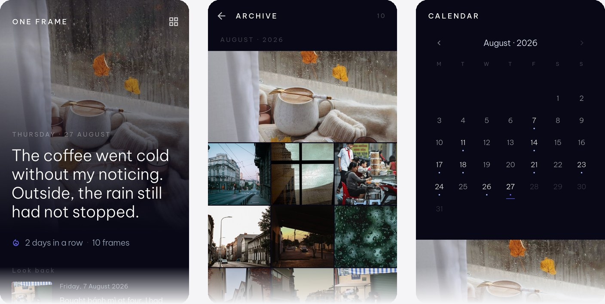

No account
An account exists to identify you to a server. There is no server, so an account would collect an email address in order to protect nothing. The feature you do not ship cannot leak.
Case study · Android
Verified on deviceIn release validationNot published

One Frame accepts one photograph and one sentence a day. About twenty seconds. You can rewrite today as often as you like. You cannot fill in yesterday.
That refusal is the whole design. A journal you can backfill becomes a backlog, and a backlog becomes homework — the reason most journalling apps are abandoned in week three. A day you missed stays empty, and the calendar shows the gap rather than inviting you to repair it.
Local-first is the second refusal. Most apps that call themselves private still mean somebody else's server. There is no account here, no upload and no cloud backup — which also means uninstalling loses everything, so the app says exactly that on the first screen, before anyone has anything to lose.
The product is the sequence below, not the screens. Each row is behaviour someone can walk through on a phone today.
An account exists to identify you to a server. There is no server, so an account would collect an email address in order to protect nothing. The feature you do not ship cannot leak.
A backend would add a breach surface, a subscription, a privacy policy with real teeth and an operating cost — to a product whose entire value is that today's photograph is on your phone and nowhere else. It would also make private a promise about somebody else's infrastructure rather than a fact about yours.
Everything is on the device, which is a real trade and not a free win: uninstalling loses everything. The app is direct about that in onboarding and again in settings, and export exists so the trade is survivable.
Android already sandboxes every app. Encrypting on top of that is a second, narrower claim — that the journal database, each photograph and every exported backup are unreadable as files, with the keys held by the operating system rather than compiled into the app. It is worth claiming only because it was checked by reading the bytes back off a phone.
No streak pressure beyond a count, no prompts to catch up, no feed, no AI writing the sentence for you. The product asks for twenty seconds and then gets out of the way. Everything it refuses is a decision, not a gap in the roadmap.
The suite covers the domain rules, the storage boundary, the cipher framing, the backup envelope, migration ordering and a scan for untranslated copy. Every one of them passes, and the analyser reports nothing. Both are gates, not summaries.
A biometric prompt that never appeared. Authentication was wired correctly but hosted by the wrong activity class, and the platform declined to show anything at all. Nothing threw. Nothing logged. A security feature nobody has watched run has not been verified.
An archive of grey tiles. The photo loader was scoped to one route, so the archive — reached by a push — never received it. In a debug build that trips an assertion; in a release build the assertion is stripped and each tile is a plain grey box. A dead feature that looks like slow loading.
A backup that restored the words and lost the pictures. Photographs were copied into the archive still sealed with the exporting phone's key. On the phone that made the backup nothing looked wrong — which is the only phone the round-trip test ever used. Anywhere else, every restored photograph was a file nothing could open: exactly the case a backup exists for.
Photographs written around the storage layer, leaving plaintext files on the phone while every test stayed green — and a settings toggle that would not move, the smallest visible defect and the first one a person would have hit.
None of these were found by writing more tests. They were found by running the app on a physical phone, reading the files it had written, and watching a release build rather than a debug one. Emulators were excluded on purpose; so was the Raspberry Pi used to make the edit-and-look loop fast, because neither has a real Keystore or a real fingerprint sensor.
Evidence Each of the five is documented in the technical report with how it was detected, the fix, and the check that now fails without the fix.